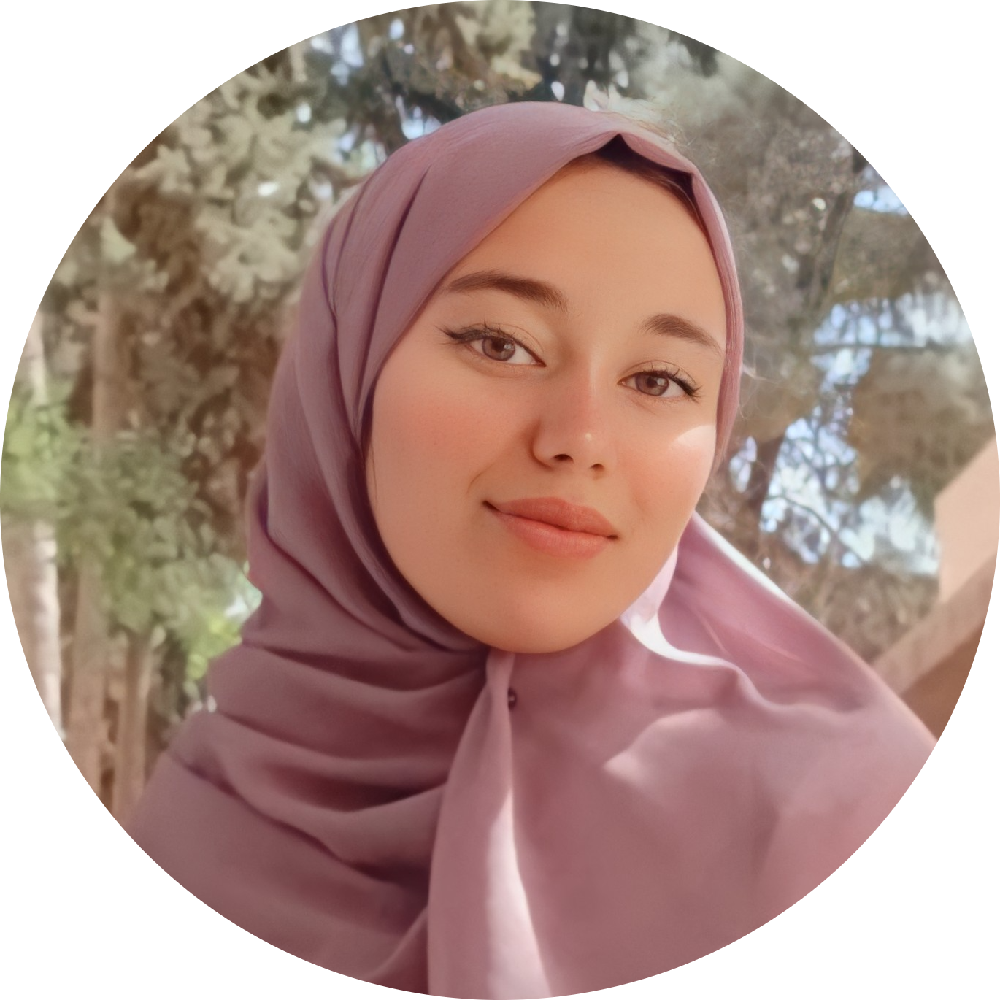

|  | AIT BARANE KAWTAR biologiste, Animal Physiology 🩸 🐭. |
| Period | Training |
|---|---|
| 01/04/2002-30/06/2022 | Research internship Agroscience and Environment Microbial Biotechnology Laboratory (BIOMAGE) of the Faculty of Sciences SEMLALIA |
| 01/02/2022-28/02/2022 | Pathological anatomy laboratory CHU Marrakech |
| 01/11/2021-31/12/2021 | internship Guéliz medical analysis laboratory |
| 01/03/2021-31/05/2021 | Laboratory Pharmacology Neurobiology Anthropobiology and Environment (LPNAE) of the Faculty of Sciences SEMLALIA |
| HTML ★★★★ | BOOTSTRAP ★★☆☆ |
| CSS ★★★☆ | JAVASCRIPT ★☆☆☆ |